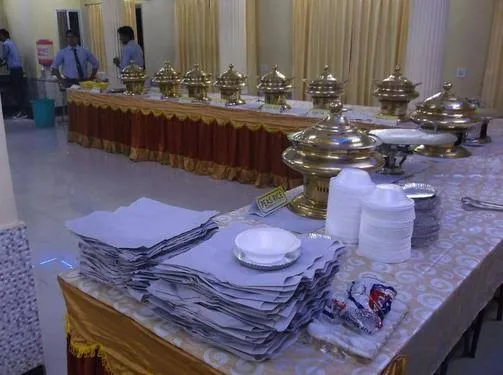
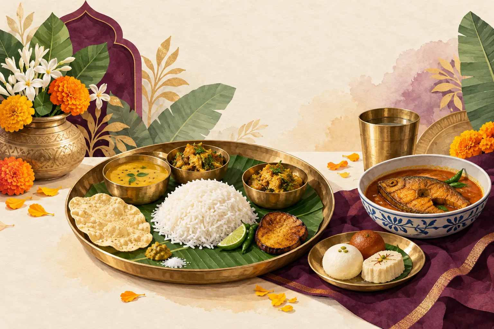

Your occasion
Share the type of gathering, preferred date and location.
For a family gathering or celebration, begin with the event you have in mind. Discuss food, serving style, guests and practical needs directly with the business.

The listing verifies catering as a business category, but does not confirm a current menu or package list.
Share the type of gathering, preferred date and location.
Discuss approximate guest count and any dietary needs.
Ask about menu ideas, presentation and serving arrangements.

Past business listing photos show a covered buffet and plated desserts. They offer a glimpse of prior event presentation, without promising the same dishes today.
See genuine photographs